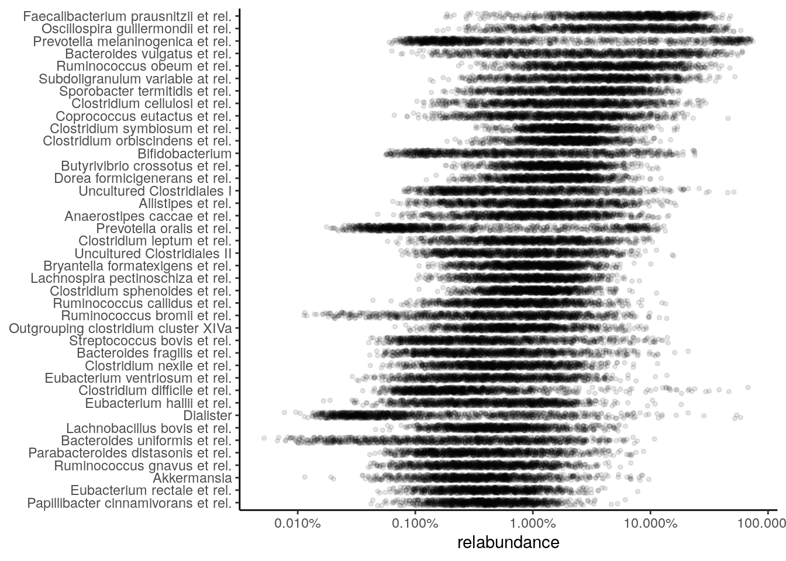
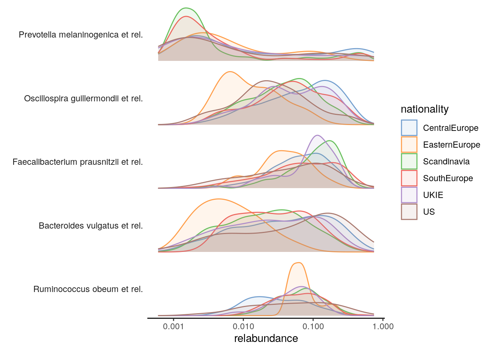
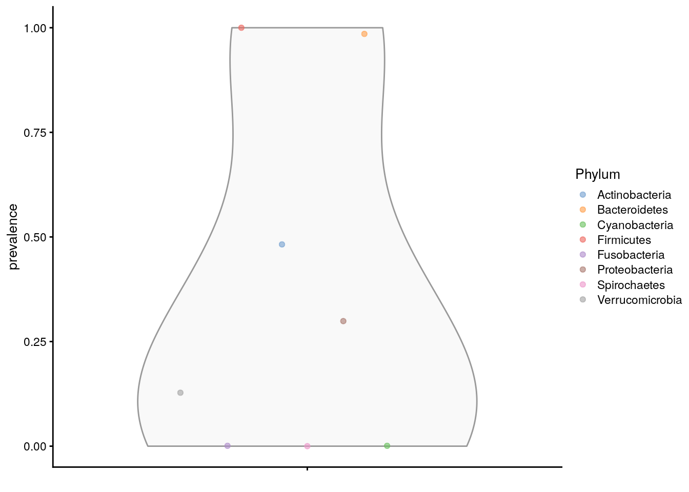

Chapter 5 Exploration and quality Control
This chapter focuses on the quality control and exploration of microbiome data and establishes commonly used descriptive summaries. Familiarizing with the peculiarities of a given data set is the essential basis for any data analysis and model building.
The dataset should not suffer from severe technical biases, and you should at least be aware of potential challenges, such as outliers, biases, unexpected patterns and so forth. Standard summaries and visualizations can help, and the rest comes with experience. The exploration and quality control can be iterative processes.
library(mia)5.1 Abundance
Abundance visualization is an important data exploration
approach. miaViz offers the function plotAbundanceDensity to plot
the most abundant taxa with several options.
In the following few demonstrations are shown, using the (L. Lahti et al. 2014) dataset. A Jitter plot based on relative abundance data, similar to the one presented at (Salosensaari et al. 2021) supplementary figure 1, could be visualized as follows:
# Loading example data
library(miaTime)
library(miaViz)
data(hitchip1006)
tse <- hitchip1006
# Add relative abundances
tse <- transformCounts(tse, MARGIN = "samples", method = "relabundance")
library(miaViz)
# Use argument names
# assay_name / assay_name / assay_name
# depending on the mia package version
plotAbundanceDensity(tse, layout = "jitter", assay_name = "relabundance",
n = 40, point_size=1, point_shape=19, point_alpha=0.1) +
scale_x_log10(label=scales::percent)
The relative abundance values for the top-5 taxonomic features can be visualized as a density plot over a log scaled axis, with “nationality” indicated by colors:
plotAbundanceDensity(tse, layout = "density", assay_name = "relabundance",
n = 5, colour_by="nationality", point_alpha=1/10) +
scale_x_log10()
5.2 Prevalence
Prevalence quantifies the frequency of samples where certain microbes were detected (above a given detection threshold). The prevalence can be given as sample size (N) or percentage (unit interval).
Investigating prevalence allows you either to focus on changes which pertain to the majority of the samples, or identify rare microbes, which may be conditionally abundant in a small number of samples, however.
The population prevalence (frequency) at a 1% relative abundance
threshold (detection = 1/100 and as_relative = TRUE), can look
like this.
head(getPrevalence(tse, detection = 1/100, sort = TRUE, as_relative = TRUE))## Faecalibacterium prausnitzii et rel. Ruminococcus obeum et rel.
## 0.9522 0.9140
## Oscillospira guillermondii et rel. Clostridium symbiosum et rel.
## 0.8801 0.8714
## Subdoligranulum variable at rel. Clostridium orbiscindens et rel.
## 0.8358 0.8315The function arguments detection and as_relative can also be used
to access, how many samples do pass a threshold for raw counts. Here
the population prevalence (frequency) at the absolute abundance
threshold (as_relative = FALSE) at read count 1 (detection = 1) is
accessed.
head(getPrevalence(tse, detection = 1, sort = TRUE, assay_name = "counts",
as_relative = FALSE))## Uncultured Mollicutes Uncultured Clostridiales II
## 1 1
## Uncultured Clostridiales I Tannerella et rel.
## 1 1
## Sutterella wadsworthia et rel. Subdoligranulum variable at rel.
## 1 1If the output should be used for subsetting or storing the data in the
rowData, set sort = FALSE.
5.2.1 Prevalence analysis
To investigate microbiome prevalence at a selected taxonomic level, two approaches are available.
First the data can be agglomerated to the taxonomic level and getPrevalence
applied on the resulting object.
# Agglomerate taxa abundances to Phylum level, and add the new table
# to the altExp slot
altExp(tse,"Phylum") <- agglomerateByRank(tse, "Phylum")
# Check prevalence for the Phylum abundance table from the altExp slot
head(getPrevalence(altExp(tse,"Phylum"), detection = 1/100, sort = TRUE,
assay_name = "counts", as_relative = TRUE))## Firmicutes Bacteroidetes Actinobacteria Proteobacteria Verrucomicrobia
## 1.0000000 0.9852302 0.4821894 0.2988705 0.1277150
## Cyanobacteria
## 0.0008688Alternatively, the rank argument could be set to perform the
agglomeration on the fly.
head(getPrevalence(tse, rank = "Phylum", detection = 1/100, sort = TRUE,
assay_name = "counts", as_relative = TRUE))## Firmicutes Bacteroidetes Actinobacteria Proteobacteria Verrucomicrobia
## 1.0000000 0.9852302 0.4821894 0.2988705 0.1277150
## Cyanobacteria
## 0.0008688Note that, by default, na.rm = TRUE is used for agglomeration in
getPrevalence, whereas the default for agglomerateByRank is
FALSE to prevent accidental data loss.
If you only need the names of the prevalent taxa, getPrevalentTaxa
is available. This returns the taxa that exceed the given prevalence
and detection thresholds.
getPrevalentTaxa(tse, detection = 0, prevalence = 50/100)
prev <- getPrevalentTaxa(tse, detection = 0, prevalence = 50/100,
rank = "Phylum", sort = TRUE)
prevNote that the detection and prevalence thresholds are not the same, since
detection can be applied to relative counts or absolute counts depending on
whether as_relative is set TRUE or FALSE
The function ‘getPrevalentAbundance’ can be used to check the total relative abundance of the prevalent taxa (between 0 and 1).
5.2.2 Rare taxa
Related functions are available for the analysis of rare taxa
(rareMembers; rareAbundance; lowAbundance, getRareTaxa,
subsetByRareTaxa).
5.2.3 Plotting prevalence
To plot the prevalence, add the prevalence of each taxa to the
rowData. Here, we are analysing the Phylum level abundances, which
are stored in the altExp slot.
rowData(altExp(tse,"Phylum"))$prevalence <-
getPrevalence(altExp(tse,"Phylum"), detection = 1/100, sort = FALSE,
assay_name = "counts", as_relative = TRUE)The prevalences can be then plotted via the plotting functions from
the scater package.
library(scater)
plotRowData(altExp(tse,"Phylum"), "prevalence", colour_by = "Phylum")
The prevalence can be also visualized on the taxonomic tree with the
miaViz package.
altExps(tse) <- splitByRanks(tse)
altExps(tse) <-
lapply(altExps(tse),
function(y){
rowData(y)$prevalence <-
getPrevalence(y, detection = 1/100, sort = FALSE,
assay_name = "counts", as_relative = TRUE)
y
})
top_phyla <- getTopTaxa(altExp(tse,"Phylum"),
method="prevalence",
top=5L,
assay_name="counts")
top_phyla_mean <- getTopTaxa(altExp(tse,"Phylum"),
method="mean",
top=5L,
assay_name="counts")
x <- unsplitByRanks(tse, ranks = taxonomyRanks(tse)[1:6])
x <- addTaxonomyTree(x)After some preparation the data is assembled and can be plotted via
plotRowTree.
library(miaViz)
plotRowTree(x[rowData(x)$Phylum %in% top_phyla,],
edge_colour_by = "Phylum",
tip_colour_by = "prevalence",
node_colour_by = "prevalence")Figure 5.1: Prevalence of top phyla as judged by prevalence
plotRowTree(x[rowData(x)$Phylum %in% top_phyla_mean,],
edge_colour_by = "Phylum",
tip_colour_by = "prevalence",
node_colour_by = "prevalence")Figure 5.2: Prevalence of top phyla as judged by mean abundance
5.3 Quality control
Next, let us load the GlobalPatterns data set to illustrate standard
microbiome data summaries.
library(mia)
data("GlobalPatterns", package="mia")
tse <- GlobalPatterns 5.3.1 Top taxa
The getTopTaxa identifies top taxa in the data.
# Pick the top taxa
top_features <- getTopTaxa(tse, method="median", top=10)
# Check the information for these
rowData(tse)[top_features, taxonomyRanks(tse)]## DataFrame with 10 rows and 7 columns
## Kingdom Phylum Class Order
## <character> <character> <character> <character>
## 549656 Bacteria Cyanobacteria Chloroplast Stramenopiles
## 331820 Bacteria Bacteroidetes Bacteroidia Bacteroidales
## 317182 Bacteria Cyanobacteria Chloroplast Stramenopiles
## 94166 Bacteria Proteobacteria Gammaproteobacteria Pasteurellales
## 279599 Bacteria Cyanobacteria Nostocophycideae Nostocales
## 158660 Bacteria Bacteroidetes Bacteroidia Bacteroidales
## 329744 Bacteria Actinobacteria Actinobacteria Actinomycetales
## 326977 Bacteria Actinobacteria Actinobacteria Bifidobacteriales
## 248140 Bacteria Bacteroidetes Bacteroidia Bacteroidales
## 550960 Bacteria Proteobacteria Gammaproteobacteria Enterobacteriales
## Family Genus Species
## <character> <character> <character>
## 549656 NA NA NA
## 331820 Bacteroidaceae Bacteroides NA
## 317182 NA NA NA
## 94166 Pasteurellaceae Haemophilus Haemophilusparainflu..
## 279599 Nostocaceae Dolichospermum NA
## 158660 Bacteroidaceae Bacteroides NA
## 329744 ACK-M1 NA NA
## 326977 Bifidobacteriaceae Bifidobacterium Bifidobacteriumadole..
## 248140 Bacteroidaceae Bacteroides Bacteroidescaccae
## 550960 Enterobacteriaceae Providencia NA5.3.2 Library size / read count
The total counts/sample can be calculated using the
perCellQCMetrics/addPerCellQC from the scater package. The former one
just calculates the values, whereas the latter one directly adds them to the
colData.
library(scater)
perCellQCMetrics(tse)## DataFrame with 26 rows and 3 columns
## sum detected total
## <numeric> <numeric> <numeric>
## CL3 864077 6964 864077
## CC1 1135457 7679 1135457
## SV1 697509 5729 697509
## M31Fcsw 1543451 2667 1543451
## M11Fcsw 2076476 2574 2076476
## ... ... ... ...
## TS28 937466 2679 937466
## TS29 1211071 2629 1211071
## Even1 1216137 4213 1216137
## Even2 971073 3130 971073
## Even3 1078241 2776 1078241tse <- addPerCellQC(tse)
colData(tse)## DataFrame with 26 rows and 10 columns
## X.SampleID Primer Final_Barcode Barcode_truncated_plus_T
## <factor> <factor> <factor> <factor>
## CL3 CL3 ILBC_01 AACGCA TGCGTT
## CC1 CC1 ILBC_02 AACTCG CGAGTT
## SV1 SV1 ILBC_03 AACTGT ACAGTT
## M31Fcsw M31Fcsw ILBC_04 AAGAGA TCTCTT
## M11Fcsw M11Fcsw ILBC_05 AAGCTG CAGCTT
## ... ... ... ... ...
## TS28 TS28 ILBC_25 ACCAGA TCTGGT
## TS29 TS29 ILBC_26 ACCAGC GCTGGT
## Even1 Even1 ILBC_27 ACCGCA TGCGGT
## Even2 Even2 ILBC_28 ACCTCG CGAGGT
## Even3 Even3 ILBC_29 ACCTGT ACAGGT
## Barcode_full_length SampleType
## <factor> <factor>
## CL3 CTAGCGTGCGT Soil
## CC1 CATCGACGAGT Soil
## SV1 GTACGCACAGT Soil
## M31Fcsw TCGACATCTCT Feces
## M11Fcsw CGACTGCAGCT Feces
## ... ... ...
## TS28 GCATCGTCTGG Feces
## TS29 CTAGTCGCTGG Feces
## Even1 TGACTCTGCGG Mock
## Even2 TCTGATCGAGG Mock
## Even3 AGAGAGACAGG Mock
## Description sum detected
## <factor> <numeric> <numeric>
## CL3 Calhoun South Carolina Pine soil, pH 4.9 864077 6964
## CC1 Cedar Creek Minnesota, grassland, pH 6.1 1135457 7679
## SV1 Sevilleta new Mexico, desert scrub, pH 8.3 697509 5729
## M31Fcsw M3, Day 1, fecal swab, whole body study 1543451 2667
## M11Fcsw M1, Day 1, fecal swab, whole body study 2076476 2574
## ... ... ... ...
## TS28 Twin #1 937466 2679
## TS29 Twin #2 1211071 2629
## Even1 Even1 1216137 4213
## Even2 Even2 971073 3130
## Even3 Even3 1078241 2776
## total
## <numeric>
## CL3 864077
## CC1 1135457
## SV1 697509
## M31Fcsw 1543451
## M11Fcsw 2076476
## ... ...
## TS28 937466
## TS29 1211071
## Even1 1216137
## Even2 971073
## Even3 1078241The distribution of calculated library sizes can be visualized as a histogram (left), or by sorting the samples by library size (right).
library(ggplot2)
p1 <- ggplot(as.data.frame(colData(tse))) +
geom_histogram(aes(x = sum), color = "black", fill = "gray", bins = 30) +
labs(x = "Library size", y = "Frequency (n)") +
# scale_x_log10(breaks = scales::trans_breaks("log10", function(x) 10^x),
# labels = scales::trans_format("log10", scales::math_format(10^.x))) +
theme_bw() +
theme(panel.grid.major = element_blank(), # Removes the grid
panel.grid.minor = element_blank(),
panel.border = element_blank(),
panel.background = element_blank(),
axis.line = element_line(colour = "black")) # Adds y-axis
library(dplyr)
df <- as.data.frame(colData(tse)) %>%
arrange(sum) %>%
mutate(index = 1:n())
p2 <- ggplot(df, aes(y = index, x = sum/1e6)) +
geom_point() +
labs(x = "Library size (million reads)", y = "Sample index") +
theme_bw() +
theme(panel.grid.major = element_blank(), # Removes the grid
panel.grid.minor = element_blank(),
panel.border = element_blank(),
panel.background = element_blank(),
axis.line = element_line(colour = "black")) # Adds y-axis
library(patchwork)
p1 + p2
Figure 5.3: Library size distribution.
Library sizes - and other variables from colData - can be also
visualized by using specified function called plotColData.
library(ggplot2)
# Sort samples by read count, order the factor levels, and store back to tse as DataFrame
# TODO: plotColData could include an option for sorting samples based on colData variables
colData(tse) <- as.data.frame(colData(tse)) %>%
arrange(X.SampleID) %>%
mutate(X.SampleID = factor(X.SampleID, levels=X.SampleID)) %>%
DataFrame
plotColData(tse,"sum","X.SampleID", colour_by = "SampleType") +
theme(axis.text.x = element_text(angle = 45, hjust=1)) +
labs(y = "Library size (N)", x = "Sample ID") 
Figure 5.4: Library sizes per sample.
plotColData(tse,"sum","SampleType", colour_by = "SampleType") +
theme(axis.text.x = element_text(angle = 45, hjust=1))
Figure 5.5: Library sizes per sample type.
In addition, data can be rarefied with subsampleCounts, which normalises the samples to an equal number of reads. However, this practice has been discouraged for the analysis of differentially abundant microorganisms (see (P. J. McMurdie and Holmes 2014)).
5.3.3 Contaminant sequences
Samples might be contaminated with exogenous sequences. The impact of each contaminant can be estimated based on their frequencies and concentrations across the samples.
The following decontam functions are based on the (Davis et al. 2018) and support such functionality:
isContaminant,isNotContaminantaddContaminantQC,addNotContaminantQC
Session Info
R version 4.2.1 (2022-06-23)
Platform: x86_64-pc-linux-gnu (64-bit)
Running under: Ubuntu 20.04.4 LTS
Matrix products: default
BLAS: /usr/lib/x86_64-linux-gnu/openblas-pthread/libblas.so.3
LAPACK: /usr/lib/x86_64-linux-gnu/openblas-pthread/liblapack.so.3
locale:
[1] LC_CTYPE=en_US.UTF-8 LC_NUMERIC=C
[3] LC_TIME=en_US.UTF-8 LC_COLLATE=en_US.UTF-8
[5] LC_MONETARY=en_US.UTF-8 LC_MESSAGES=en_US.UTF-8
[7] LC_PAPER=en_US.UTF-8 LC_NAME=C
[9] LC_ADDRESS=C LC_TELEPHONE=C
[11] LC_MEASUREMENT=en_US.UTF-8 LC_IDENTIFICATION=C
attached base packages:
[1] stats4 stats graphics grDevices utils datasets methods
[8] base
other attached packages:
[1] patchwork_1.1.2 dplyr_1.1.1
[3] scater_1.26.1 scuttle_1.8.4
[5] miaViz_1.7.5 ggraph_2.1.0
[7] ggplot2_3.4.1 miaTime_0.1.20
[9] mia_1.7.11 MultiAssayExperiment_1.24.0
[11] TreeSummarizedExperiment_2.1.4 Biostrings_2.66.0
[13] XVector_0.38.0 SingleCellExperiment_1.20.1
[15] SummarizedExperiment_1.28.0 Biobase_2.58.0
[17] GenomicRanges_1.50.2 GenomeInfoDb_1.34.9
[19] IRanges_2.32.0 S4Vectors_0.36.2
[21] BiocGenerics_0.44.0 MatrixGenerics_1.10.0
[23] matrixStats_0.63.0-9003 BiocStyle_2.24.0
[25] rebook_1.6.0
loaded via a namespace (and not attached):
[1] utf8_1.2.3 tidyselect_1.2.0
[3] RSQLite_2.3.0 AnnotationDbi_1.58.0
[5] grid_4.2.1 TSP_1.2-3
[7] BiocParallel_1.32.6 Rtsne_0.16
[9] munsell_0.5.0 ScaledMatrix_1.6.0
[11] codetools_0.2-19 withr_2.5.0
[13] colorspace_2.1-0 filelock_1.0.2
[15] highr_0.10 knitr_1.42
[17] ca_0.71.1 labeling_0.4.2
[19] GenomeInfoDbData_1.2.9 polyclip_1.10-4
[21] bit64_4.0.5 farver_2.1.1
[23] vctrs_0.6.1 treeio_1.22.0
[25] generics_0.1.3 xfun_0.38
[27] R6_2.5.1 doParallel_1.0.17
[29] ggbeeswarm_0.7.1 clue_0.3-64
[31] graphlayouts_0.8.4 rsvd_1.0.5
[33] seriation_1.4.2 locfit_1.5-9.7
[35] gridGraphics_0.5-1 bitops_1.0-7
[37] cachem_1.0.7 DelayedArray_0.24.0
[39] scales_1.2.1 SEtools_1.10.0
[41] beeswarm_0.4.0 gtable_0.3.3
[43] beachmat_2.14.0 sva_3.44.0
[45] tidygraph_1.2.3 rlang_1.1.0
[47] genefilter_1.78.0 GlobalOptions_0.1.2
[49] splines_4.2.1 lazyeval_0.2.2
[51] BiocManager_1.30.20 yaml_2.3.7
[53] reshape2_1.4.4 tools_4.2.1
[55] bookdown_0.33 ggplotify_0.1.0
[57] decontam_1.18.0 jquerylib_0.1.4
[59] RColorBrewer_1.1-3 Rcpp_1.0.10
[61] plyr_1.8.8 sparseMatrixStats_1.10.0
[63] zlibbioc_1.44.0 purrr_1.0.1
[65] RCurl_1.98-1.12 GetoptLong_1.0.5
[67] viridis_0.6.2 cowplot_1.1.1
[69] ggrepel_0.9.3 cluster_2.1.4
[71] DECIPHER_2.26.0 magrittr_2.0.3
[73] data.table_1.14.8 openxlsx_4.2.5.2
[75] circlize_0.4.15 ggnewscale_0.4.8
[77] randomcoloR_1.1.0.1 evaluate_0.20
[79] xtable_1.8-4 XML_3.99-0.14
[81] gridExtra_2.3 shape_1.4.6
[83] compiler_4.2.1 tibble_3.2.1
[85] V8_4.2.2 crayon_1.5.2
[87] htmltools_0.5.5 ggfun_0.0.9
[89] mgcv_1.8-42 tidyr_1.3.0
[91] geneplotter_1.74.0 aplot_0.1.10
[93] DBI_1.1.3 tweenr_2.0.2
[95] ComplexHeatmap_2.12.1 MASS_7.3-58.3
[97] Matrix_1.5-3 permute_0.9-7
[99] cli_3.6.1 parallel_4.2.1
[101] igraph_1.4.1 pkgconfig_2.0.3
[103] dir.expiry_1.4.0 registry_0.5-1
[105] foreach_1.5.2 ggtree_3.4.4
[107] annotate_1.74.0 vipor_0.4.5
[109] bslib_0.4.2 DirichletMultinomial_1.40.0
[111] yulab.utils_0.0.6 stringr_1.5.0
[113] digest_0.6.31 vegan_2.6-4
[115] graph_1.74.0 rmarkdown_2.21
[117] tidytree_0.4.2 edgeR_3.38.4
[119] DelayedMatrixStats_1.20.0 curl_5.0.0
[121] rjson_0.2.21 lifecycle_1.0.3
[123] nlme_3.1-162 jsonlite_1.8.4
[125] BiocNeighbors_1.16.0 CodeDepends_0.6.5
[127] viridisLite_0.4.1 limma_3.52.4
[129] fansi_1.0.4 pillar_1.9.0
[131] lattice_0.20-45 KEGGREST_1.36.3
[133] fastmap_1.1.1 httr_1.4.5
[135] survival_3.5-5 glue_1.6.2
[137] zip_2.2.2 sechm_1.4.1
[139] png_0.1-8 iterators_1.0.14
[141] bit_4.0.5 ggforce_0.4.1
[143] stringi_1.7.12 sass_0.4.5
[145] blob_1.2.4 DESeq2_1.36.0
[147] BiocSingular_1.14.0 memoise_2.0.1
[149] irlba_2.3.5.1 ape_5.7-1